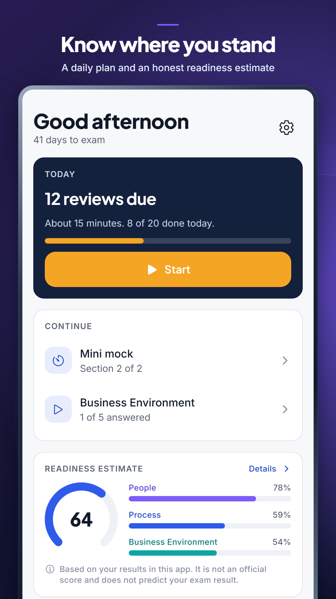
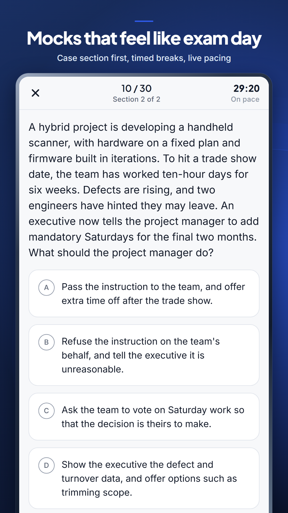
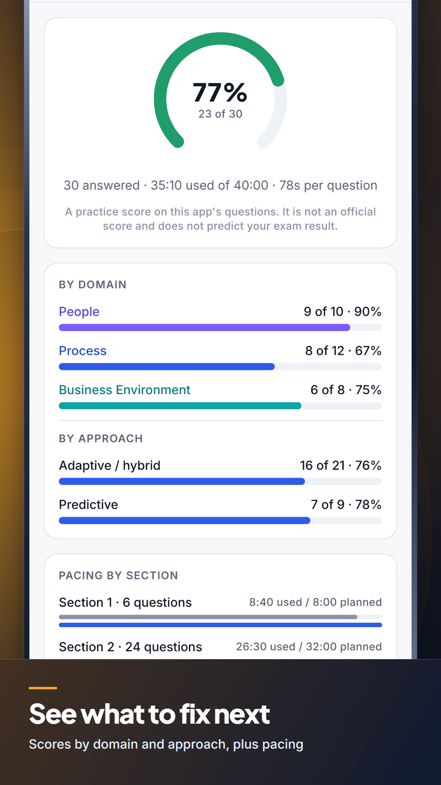

Dialed In is a clean, focused practice app for people preparing for the PMP® exam. It is built on the July 2026 exam outline: People 33%, Process 41%, Business Environment 26%, with a case section first.
What's inside
- Every answer explainedEach choice comes with a reason, right or wrong, plus the key idea and a link to the related guide.
- Timed mock examsMini, half and full length. Case section first, it locks at the first break, timed breaks and live pacing.
- Case setsLonger scenarios with exhibits, followed by a linked group of questions.
- Spaced reviewQuestions come back just before you would forget them, tuned by how sure you were.
- Readiness by domainAn estimate from your own results, with weak spots and pacing analysis.
- Quick guidesOne for every task in the outline, plus formulas with worked examples and exam strategy.
A look at the app



One purchase. No ads, no subscription, no account.
Private and offline
No account, no ads and no tracking. Everything works without an internet connection, and your progress stays on your device. Read the privacy policy.
Please note
Dialed In is practice, not a training course. It does not provide the education hours required to apply for the exam, and it does not guarantee a pass. Readiness estimates and mock scores are based on this app's questions only and are not official scores. Dialed In is an independent study tool. It is not affiliated with, endorsed by, or sponsored by Project Management Institute, Inc. (PMI). Questions are original practice items and are not actual exam questions. PMP, CAPM, and PMBOK are registered marks of Project Management Institute, Inc.